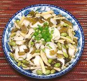

|
Rice Ovals with Bamboo, BeansChina - Zhejiang - Xuelihong Sunsi Maodou Chao Nian'gao | ||||
| Serves: Effort: Sched: DoAhead: |
4 main ** 30 min Prep |
With interesting flavors and contrasting textures, this vegetarian "one dish meal" is quick to make. It should be served immediately it is done, but leftovers can be reheated in the oven. | |||
|
6 1 12 1 4 1/2 2 2 1 |
oz c oz c t T T c |
Bamboo Shoots (1) Soybeans, frozen (2) Rice Ovals (3) Shanghai Greens (4) Scallions Salt Oil Rice Wine (5) Water, boiling |
Prep (15 min)
|